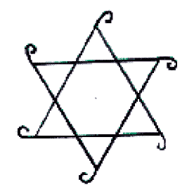
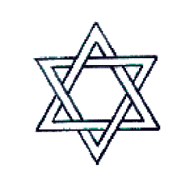
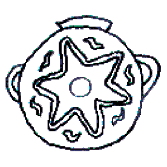
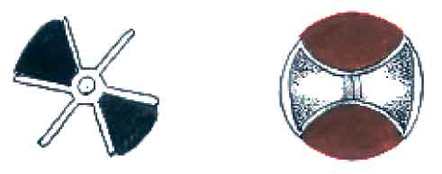
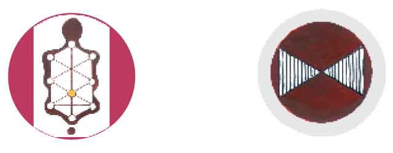
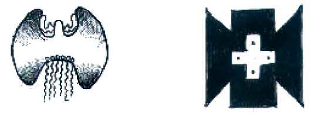
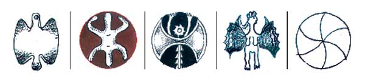
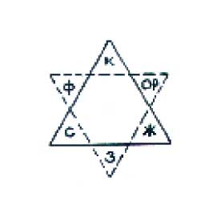
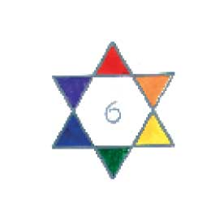
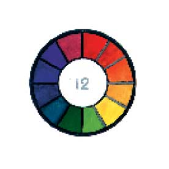

Опыт нумерологической колористики, или число и цвет
Опасная шестерка – гексатида
Немного мистики, она же математика
В коллективном сознании нашего современного общества (или в фольклоре, если хотите) прочно засело предубеждение против числа шесть. Оно якобы заключает в себе некое непоправимое зло, пришествие Антихриста с его числом зверя – 666. Почему-то всякий нехороший человек – предатель, подхалим, прислужник сильных мира сего – называется «шестеркой»; неискренно льстить кому-то – значит делать «шестью шесть». Откуда такая символика? Вряд ли простые советские люди знали изречение Пифагора: «Шестерка – символ ненасытности, невоздержанности в еде и питье, пустого тщеславия».
Кстати о Пифагоре: великий эллин в VI веке до н.э. предвосхитил открытие Фрейда о двойственной природе человеческой души. У каждого человека, утверждал Пифагор, есть Психе (женская часть души) и Эрот (мужская). Такую же двойственность приписывал Пифагор и богам. Нельзя сказать, что он решительно осуждал в своей мифологии или антропологии число 6 или 12 (хотя это четные числа). Более того, в своей математической науке Пифагор оценивает гексатиду как «совершенное число», производящее Большую Тетрактиду – 36 = 6х6, ту самую, которой клялись пифагорейцы.
Роль шестерицы в математике поистине чудесна.
Круг несоизмерим с квадратом, но легко делится на шесть частей хордами, равными радиусу; божественная пропорция – число фи, равноe 0,618 – не обходится без числа 6, в то время как ряд Фибоначчи (это его современное название), из которого Пифагор получил число фи, не содержит ни 6, ни 12, ни 36. (Блистательное отсутствие божественных персон выделяет их из общего ряда!) Ещё раз геометрия свидетельствует о достоинстве гексатиды: вокруг точки на плоскости можно разместить без промежутков только шесть треугольников, четыре квадрата и три шестиугольника.
Тот же Дионисий Фрейер, который провозгласил решительное преимущество «неравных» чисел перед «равными», утверждает, что «шесть исходят из Единого, открываясь лишь в Нем едином». И даже более того: «Нет другой Гармонии, кроме как в этом Единстве».

Немного антропологии, она же мифология
Каббала возносит шестерицу на недосягаемую высоту: шестая сефира Древа Жизни – Тифарет – означает красоту и гармонию, а также ценнейшее для всякого человека понятие – ЭГО. В чертеже Древа Жизни Тифарет занимает центральное место (вроде пупа); все шесть сефир верхней части Древа напоминают рисунок грудной клетки и головы человека, то есть вместилища души и духа.

Сам Создатель произвел на свет множество прекрасных шестигранных форм: планету Земля (из шестигранного куба), кристаллы различных минералов, снежинки, цветы семейства лилейных с шестилучевой симметрией. Он построил мир из шести первоначал – четырех стихий и двух сил, разделил год на два полугодия по шесть месяцев, возжег на небе дважды шесть созвездий – знаков Зодиака, разделил горизонт на шесть частей (а вы думали, на сколько?) и сутки на 6х4 часа. Он создал великую армию шестиногих тварей; некоторых из них мы недолюбливаем, считая вредными, но ведь недаром их произвел Творец! В конце концов, Создатель сотворил мир в шесть дней и окружил себя шестикрылыми серафимами – это лучший аргумент в пользу ценности гексатиды.
Не потому ли шестиконечная звезда – очень древний магический знак со времен неолита? Вплоть до позднего средневековья он был таковым у евреев, мусульман и христиан, и только с XII – XIV веков стал национальным и религиозным символом иудеев.

Дизайнер! Если ты носишь галстук-бабочку, знай, что это символ Великой богини-Матери, которую в старину звали Баба. От её шестичастного знака произошло название красивого насекомого, порхающего среди цветов – бабочки, или в просторечии – Бобо.

Увы! Бобо мертва, как засвидетельствовал Поэт.


Гексатида была «водным знаком» – эмблемой океанид (божеств, обитавших в воде), Афродиты, Урании и Венеры (родившихся из морской пены), Диониса (бога «веселящей воды»), священной коровы Ио (источника самой питательной влаги), а также шести бессмертных Плеяд. Собственно говоря, вода, вино и молоко сами по себе не содержат зла, но перечисленные здесь божества тем или иным образом связаны с любовными делами античных богов, далеко не всегда свободными от греха: насилия, оргий, измен, злобного преследования. Не из этих ли древних корней выросло негативное отношение народа к шестерке?

Гексатида входит также в число 12, посвящённое мужеподобным богиням, вроде Анесидоры – женщины с бородой. Не отсюда ли пошло неприятное свойство «шестерки» – двойственность, двуличие? Кстати, Эрот-Протогон был двуполым и имел четыре лица (пригодится!).
Немного библеистики
В единобожной иудейской религии число шесть не столь божественно, как в древних языческих верованиях. Оно как бы лишено полноты, требует завершения; шестерке не хватает единицы, чтобы превратиться в божественную семерку. Иаков служил Лавану за дочерей его по 7 лет, а за скот 6 лет (Быт. 31:41). Седьмое, безусловно, лучше, чем шестое: Пусть он работает 6 лет, а в седьмой пусть выходит на волю (Исх. 21:2).
С точки зрения человеческой, покой лучше, чем работа: Шесть лет засевай землю твою, а на седьмой оставляй её в покое (Исх. 23:11).
Шестерка нехороша и по сравнению с пятерицей: в ней содержится лишняя единица. Человек, имевший по шести пальцев на руках и на ногах, – не только урод, но и богомерзкий грешник: он поносил израильтян и за это был убит (см. 2 Цар. 21:20).
Языческий истукан Навуходоносора – тоже мерзость. Не потому ли высота его 60 локтей и ширина 6 локтей?
Всем известно, что Господь создал мир в шесть дней, но акт творения завершается в седьмой день – он завершается отдыхом от трудов. С тех пор заповедано: Шесть дней делай дела твои, а в седьмый день покойся, чтобы отдохнул вол твой и осел твой, и успокоился сын рабы твоей и пришлец (Исх. 23:12).
Дизайнер! Не суетись, соблюдай заповедь!
Изрядное количество колористики
Среди цветовых систем гексатида, пожалуй, королева или даже Великая Мать, возникшая из океана жизни и породившая множество других систем. Она появилась во второй половине ХVIII века, и пророком ее был Иоганн Вольфганг Гете. Великий поэт и естествоиспытатель, он ощущал всем своим естеством единство феноменального мира и, конечно, единство противоположностей. Он заметил, что всякий цвет порождает в органе зрения реакцию сопротивления этому пришедшему извне раздражителю. Происходит феномен автоиндукции: возникновение цвета, противоположного наблюдаемому. Так, красный порождает в органе зрения зеленый (требует зеленого), желтый требует фиолетового, синий – оранжевого. Расположив основные цвета в вершинах равностороннего треугольника, Гете противопоставил им цвета-антиподы, названные контрастными. Получился второй треугольник – система цветов, контрастных к основным. Осталось совместить треугольники, соединить шесть вершин окружностью и получить шестиступенный цветовой круг.

Теория индукции, созданная Гете, впервые объяснила научным методом феномен цветовой гармонии. Теперь стало ясно, почему в живописи красный требует зеленого, а синий требует желтого. Теперь художник может простым экспериментом определить, какой цвет составит гармоничную пару с данным, наличным.

Шестиступенный круг был принят в качестве основы для цветовых систем многими поколениями художников. Достаточно назвать такие имена, как Шеврёйль, Рунге, Делакруа, Хёльцель, Бецольд, Кандинский, Клее, Иттен… Вплоть до наших дней эта система остается простым и удобным пособием для живописцев и дизайнеров всех специальностей. Шестиступенный круг может стать более подробной и точной системой, если преобразовать его в 12 ступенный простым делением каждого цвета на два оттенка или добавлением шести смешанных цветов второй ступени. Теоретик живописи Роже де Пиль уже в XVII веке построил 12 ступенный круг. Мы уже не задаемся вопросом – случайно ли, что в этой самой популярной цветовой системе фигурирует число двенадцать? То же самое число, которое образует группы и системы в астрономии (12 месяцев, 12 знаков зодиака), в мифологии (12 подвигов Геракла), в истории (12 колен израилевых, 12 апостолов), в деле обучения суфиев (12 учителей), в практике счета (дюжина) и даже в поэтике (по Аристотелю – 12 возражений против порицания поэтических произведений).

В ЗАКЛЮЧЕНИЕ – об удивительной власти чисел над умами казалось бы неглупых людей. Вот один из примеров: в Петербурге есть некое эзотерическое общество – Петербургский клуб, где взращивают элитарную культуру, связанную с «Северной Пальмирой». В нем состоят 122 члена, и ни одним больше. Желающий вступить в клуб должен ждать, пока кто-нибудь из действительных членов отправится в «лучший мир». Почему именно 122? Потому что 122 метра – это высота шпиля Адмиралтейства.
Герой романа «Война и мир» Пьер Безухов вычислил значение имени Наполеона и своего собственного, увидел их тождество и на этом основании заключил, что он должен убить французского императора (Тут арифмология его подвела!).
Ещё один случай из жизни: один мой знакомый составил сумму дат рождения – свою, своей жены и дочери; на это число он загадал и выиграл в лотерее. В данном случае арифмология сработала.
Дизайнер! Верь числам. Помни, что числа – души вещей!
Впервые статья была опубликована в журнале «Proдизайн», №11
На главную > Статьи > Гексатида
Copyright © 2004-2005 Миронова Ленина Николаевна, Иванов Дмитрий Григорьевич